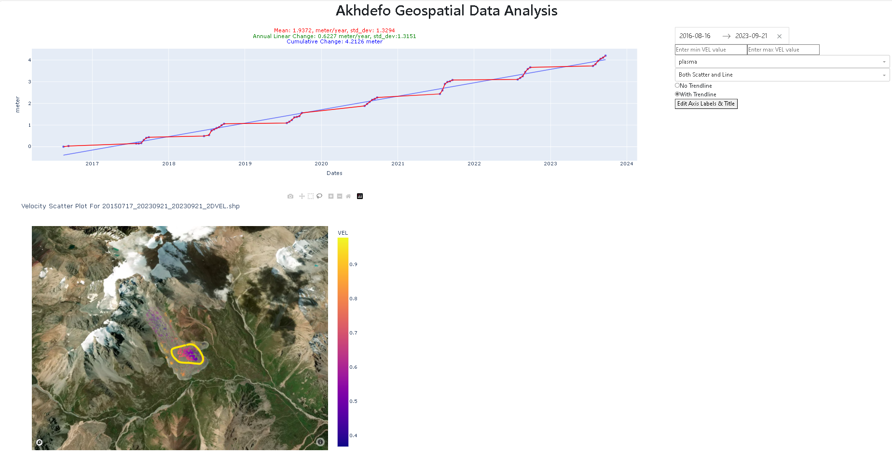

Morenney Rock Glacier Radar Descending¶
Prepare Data for Bulk Download¶
Akhdefo processes radar imagery that has been corrected for radiometric and terrain distortions. Its function, ‘download_RTC,’ enables the downloading of Synthetic Aperture Radar (SAR) products from ASF’s HyP3 platform. Users can easily order RTC, AutoRIFT, and InSAR products with just a few lines of Python script. Firstly, users are advised to visit ASF’s website to download metadata for their chosen time-series product granules. To assist users, example screenshots are provided below as a guide to navigate through the process.


Import AkhDefo Packages.¶
[ ]:
#Functions for data preparations
import akhdefo_functions
from akhdefo_functions import download_RTC
from akhdefo_functions import read_data_prep
from akhdefo_functions import move_files_with_string
from akhdefo_functions import Crop_to_AOI
#Functions data processing
from akhdefo_functions import scatter_area_mask
from akhdefo_functions import Raster_Correction
#Functions for shapefile point data interpolation to raster geotif
#Function Autovariogram use Kriging method it fits the data to different variogram models and automatically use the best fit variogram model (Computationally Heavy but you can process data in chunks)
from akhdefo_functions import Auto_Variogram
# interpoate_xyz uses the following interpolation methods (nearest, linear and cubic)
from akhdefo_functions import interpolate_xyz
#Functions for data Visualization and Analysis
from akhdefo_functions import MeanProducts_plot_ts
from akhdefo_functions import plot_stackNetwork
from akhdefo_functions import akhdefo_viewer
from akhdefo_functions import akhdefo_dashApp
Download Data using EarthData ASF Account¶
[ ]:
'''
First Run the below command and make sure {download=False} to see the granule paths and frames.
Its highly recommended to use data frame same path for the entire time-series for more accurate results
'''
'''
akhdefo_functions.download_RTC(
prompt=True, asf_datapool_results_file= './SLC/asf-datapool-results-2023-12-21_11-51-07.csv',
save_dir= 'RockGlacier_desc', job_name= 'RockGlacier_desc107',
dem_matching= False,
include_dem= False,
include_inc_map= True,
include_rgb = False,
include_scattering_area= True,
scale = 'power',
resolution = 20,
speckle_filter= False,
radiometry='gamma0',
dem_name='copernicus', download= True, limit=None, path_number=None, frame_number=None, autorift=False, RTC=True, insar=False)
'''
Extract downloaded zip files¶
[ ]:
#This functions extracts data from all the granuples zip directory.
import akhdefo_functions
akhdefo_functions.read_data_prep(zip_dir='./data./data./data/morenny/radar/desc/RockGlacier_desc_rtc/',
image_dir='./data./data./data/morenny/radar/desc/RS_dir',
ext_image_file='VV.tif', udm_mask_dir='scatter_dir', ext_udm_mask_file='area.tif', search_string=None)
[ ]:
# This function will move all the data from each granules subdir to a single folder
import akhdefo_functions
from akhdefo_functions import move_files_with_string
move_files_with_string(source_dir='./data./data./data/morenny/radar/desc/RS_dir/', dest_dir='./data./data./data/morenny/radar/desc/RS', search_string='.tif')
move_files_with_string(source_dir='./data./data./data/morenny/radar/desc/scatter_dir/', dest_dir='scatter_rs', search_string='.tif')
[ ]:
'''
Optional:
Create an accumulated scatter area mask from a set of raster images based on a given threshold.
the input dataset is taken from ASF RTC processing.
The scattering area for each pixel in the RTC image in square meters.
The values are calculated based on the effectively illuminated gamma-0 terrain surface using a digital elevation model,
the local incidence angle map, and the layover-shadow map. see detailes
at the following website https://hyp3-docs.asf.alaska.edu/guides/rtc_product_guide/#scattering-area-map
The function processes each raster image in the input folder, crops it based on the provided AOI from the shapefile,
normalizes the cropped raster, and then converts the normalized image to a binary mask based on the scatter_percentageArea_threshold.
The binary masks from each raster are then accumulated to generate the final scatter area mask.
'''
input_folder = "./data./data/morenny/radar/desc/scatter_rs"
output_folder = "./data./data/morenny/radar/desc/scatter_masks_20"
plot_folder = "./data./data/morenny/radar/desc/scatter_mask_plots_20"
shapefile_path = "./data/morenny/AOI.shp"
scatter_Area_threshold=5
vegetation_mask_path=None
#scatter_area_mask(input_folder, output_folder, plot_folder, shapefile_path, scatter_Area_threshold, vegetation_mask_path)
[ ]:
'''
Crop all raster to Area of interest bounding box
'''
import akhdefo_functions
akhdefo_functions.Crop_to_AOI(Path_to_WorkingDir='./data/morenny/radar/desc/RS_path107/',
Path_to_AOI_shapefile='./data/morenny/AOI.shp',
output_CroppedDir='./data/morenny/radar/desc/RS_cropped_path107', file_ex='.tif')
Preparing raster for radar imagery displacement calculation!¶
By deafult RTC data comes in the below three formats. The below raster correction function converts the below RTC data formats to Unassigned 8 bit integer(“uint8”).
Power Scale: SAR images in the power scale represent the square of the amplitude. Power is a measure of the energy of the radar signal returned from each point on the ground. It’s more intuitive in terms of energy interpretation but less used for visual interpretation due to its non-linear nature.
Amplitude Scale: The amplitude scale is a direct representation of the radar signal’s strength received from each point. It’s more commonly used for visual interpretation since it’s more linear than the power scale. Amplitude images are easier to interpret but can be sensitive to noise.
Decibel (dB) Scale: The decibel scale is a logarithmic scale used to express SAR data. It’s derived from the amplitude or power scale and is used to compress the dynamic range of the SAR data. The dB scale is beneficial for enhancing certain features in the data, especially in areas with very high or very low backscatter.
[ ]:
import warnings
warnings.filterwarnings("ignore")
import akhdefo_functions
akhdefo_functions.Raster_Correction(input_path="./data/morenny/radar/desc/RS_cropped_path107", output_path="./data/morenny/radar/desc/RS_cropped_path107_filt", limit=None,
lowpass_kernel_size=None, bilateral_win_size=7, bilateral_sigma_color=75,
bilateral_sigma_spatial=75,
clip_percentiles=[0, 100], optical=False,
scale='power', Vegetation_mask=None)
[ ]:
import warnings
warnings.filterwarnings("ignore")
import akhdefo_functions
akhdefo_functions.Raster_Correction(input_path="./data/morenny/radar/desc/RS_aoi10km_path107", output_path="./data/morenny/radar/desc/RS_path107_filt", limit=None,
lowpass_kernel_size=None, bilateral_win_size=8, bilateral_sigma_color=75,
bilateral_sigma_spatial=75,
clip_percentiles=[2, 98], optical=False,
scale='power', Vegetation_mask=None)
Applying Optical flow and producing time-series deformation products.¶
[2]:
import warnings
warnings.filterwarnings("ignore")
import akhdefo_functions
akhdefo_functions.Optical_flow_akhdefo(input_dir='./data/morenny/radar/desc/RS_cropped_path107_filt', output_dir='./data/morenny/radar/desc/geo_path107', AOI='./data/morenny/AOI.shp', zscore_threshold=2,
ssim_thresh=0.6, image_resolution='20m', interpolate='kriging',
show_figure=False, point_size=4, dem_path='./data/morenny/dem.tif', smoothing_kernel_size=None,
Vegetation_mask=None, VEL_scale='year', VEL_Mode='mean', good_match_option=0.75,
hillshade_option=True, shapefile_output=True, max_triplet_interval=300, pixel_size=20, num_chunks=1, overlap_percentage=0, pyr_scale=0.5, levels=15,
winsize=32, iterations=7, poly_n=7, poly_sigma=1.5,
flags=1, master_reference='single',
selection_Mode='pair', start_date=None, end_date=None, krig_method='universal', spatial_ref=True, use_detrend=False, use_zscore_krig=2, orbit_dir='desc', dense_match_option=False)
Processing: 0%| | 0/28 [00:00<?, ?it/s]
Error with model Matern: Optimal parameters not found: The maximum number of function evaluations is exceeded.
Error with model JBessel: Internal Error.
kriging succeed with Model: Cubic and score: 0.8355996967132857
kriging succeed with Model: SuperSpherical and score: 0.9778089995103257
Error with model JBessel: Internal Error.
kriging succeed with Model: Cubic and score: 0.9209098278347365
Processing: 4%|▎ | 1/28 [00:05<02:37, 5.83s/it]
kriging succeed with Model: Rational and score: 0.8951897108128958
kriging succeed with Model: Stable and score: 0.8492041894880199
kriging succeed with Model: JBessel and score: 0.6465671645005084
Processing: 7%|▋ | 2/28 [00:13<02:59, 6.92s/it]
kriging succeed with Model: Integral and score: 0.9777443559463302
kriging succeed with Model: Stable and score: 0.76599989019851
kriging succeed with Model: Stable and score: 0.8668509544470291
Processing: 11%|█ | 3/28 [00:19<02:41, 6.45s/it]
kriging succeed with Model: Stable and score: 0.9357965632567647
kriging succeed with Model: Stable and score: 0.9076703885521303
kriging succeed with Model: HyperSpherical and score: 0.8185286934384297
Processing: 14%|█▍ | 4/28 [00:24<02:22, 5.92s/it]
kriging succeed with Model: SuperSpherical and score: 0.9187309763680573
kriging succeed with Model: Rational and score: 0.8480281211376207
kriging succeed with Model: Rational and score: 0.824361534689604
Processing: 18%|█▊ | 5/28 [00:29<02:11, 5.71s/it]
kriging succeed with Model: SuperSpherical and score: 0.9376436212414725
kriging succeed with Model: Rational and score: 0.8870437445272978
kriging succeed with Model: JBessel and score: 0.7675384626962647
Processing: 21%|██▏ | 6/28 [00:35<02:05, 5.71s/it]
kriging succeed with Model: JBessel and score: 0.536250592575306
kriging succeed with Model: SuperSpherical and score: 0.7482090342666599
kriging succeed with Model: Exponential and score: 0.8488507637824972
Processing: 25%|██▌ | 7/28 [00:39<01:49, 5.21s/it]
kriging succeed with Model: TPLSimple and score: 0.9519732124793645
kriging succeed with Model: TPLSimple and score: 0.8693275157990354
kriging succeed with Model: Stable and score: 0.921471635935901
Processing: 29%|██▊ | 8/28 [00:46<01:55, 5.76s/it]
kriging succeed with Model: TPLSimple and score: 0.8804139465846709
Error with model Matern: Optimal parameters not found: The maximum number of function evaluations is exceeded.
Error with model JBessel: Internal Error.
kriging succeed with Model: HyperSpherical and score: 0.9247074879947984
kriging succeed with Model: Stable and score: 0.8052924789044275
Processing: 32%|███▏ | 9/28 [00:52<01:48, 5.73s/it]
kriging succeed with Model: Stable and score: 0.9866092771975752
kriging succeed with Model: Stable and score: 0.9867910563154021
kriging succeed with Model: Stable and score: 0.9226464593158585
Processing: 36%|███▌ | 10/28 [00:58<01:47, 5.96s/it]
kriging succeed with Model: TPLSimple and score: 0.9116468718472998
kriging succeed with Model: JBessel and score: 0.8381297602356177
Error with model Stable: Optimal parameters not found: The maximum number of function evaluations is exceeded.
kriging succeed with Model: Integral and score: 0.8833625100380635
Processing: 39%|███▉ | 11/28 [01:14<02:31, 8.92s/it]
kriging succeed with Model: Matern and score: 0.9511382402755071
kriging succeed with Model: Stable and score: 0.9442046452916809
kriging succeed with Model: Rational and score: 0.9485955093848139
Processing: 43%|████▎ | 12/28 [01:34<03:17, 12.36s/it]
kriging succeed with Model: Stable and score: 0.9025986207321395
kriging succeed with Model: Rational and score: 0.8519152457291652
kriging succeed with Model: JBessel and score: 0.7712901014052647
Processing: 46%|████▋ | 13/28 [01:41<02:39, 10.65s/it]
kriging succeed with Model: TPLSimple and score: 0.8295587833486144
kriging succeed with Model: Stable and score: 0.9404800443947203
kriging succeed with Model: Rational and score: 0.7786255911323795
Processing: 50%|█████ | 14/28 [01:47<02:08, 9.21s/it]
kriging succeed with Model: JBessel and score: 0.23835688212119321
kriging succeed with Model: Stable and score: 0.7031562468455148
kriging succeed with Model: TPLSimple and score: 0.6189875847112081
Processing: 54%|█████▎ | 15/28 [02:58<06:04, 28.03s/it]
kriging succeed with Model: JBessel and score: 0.9793050776436883
Error with model Matern: Optimal parameters not found: The maximum number of function evaluations is exceeded.
kriging succeed with Model: Cubic and score: 0.9898013856239838
kriging succeed with Model: HyperSpherical and score: 0.9470130428308661
Processing: 57%|█████▋ | 16/28 [04:06<07:59, 39.92s/it]
kriging succeed with Model: Matern and score: 0.8763769659884111
kriging succeed with Model: Matern and score: 0.9695483805349585
kriging succeed with Model: TPLSimple and score: 0.8224885919180629
Processing: 61%|██████ | 17/28 [04:15<05:35, 30.50s/it]
kriging succeed with Model: Rational and score: 0.7714073374238065
kriging succeed with Model: Stable and score: 0.9329420183257262
kriging succeed with Model: Rational and score: 0.907001785686303
Processing: 64%|██████▍ | 18/28 [04:20<03:48, 22.83s/it]
kriging succeed with Model: Integral and score: 0.9673467334449444
kriging succeed with Model: JBessel and score: 0.7986542045001844
kriging succeed with Model: Rational and score: 0.809556963879373
Processing: 68%|██████▊ | 19/28 [04:46<03:35, 23.98s/it]
kriging succeed with Model: SuperSpherical and score: 0.946642344652201
kriging succeed with Model: Rational and score: 0.8672877186894885
kriging succeed with Model: Rational and score: 0.8195316122127221
Processing: 71%|███████▏ | 20/28 [04:52<02:29, 18.66s/it]
Skipping computation for 20190924 to 20220815 as the time interval is larger than 300 days.
kriging succeed with Model: Stable and score: 0.9180629669146289
kriging succeed with Model: Matern and score: 0.8547009965679963
kriging succeed with Model: HyperSpherical and score: 0.8773432550259449
Processing: 79%|███████▊ | 22/28 [05:01<01:11, 11.92s/it]
kriging succeed with Model: SuperSpherical and score: 0.9515722772141186
kriging succeed with Model: TPLSimple and score: 0.9377556574581991
kriging succeed with Model: TPLSimple and score: 0.9201681949773445
Processing: 82%|████████▏ | 23/28 [05:12<00:58, 11.73s/it]
Error with model Stable: Optimal parameters not found: The maximum number of function evaluations is exceeded.
kriging succeed with Model: Matern and score: 0.8938997517797824
kriging succeed with Model: Integral and score: 0.9383647802479176
kriging succeed with Model: Stable and score: 0.9076156441586125
Processing: 86%|████████▌ | 24/28 [05:25<00:48, 12.25s/it]
kriging succeed with Model: JBessel and score: 0.69629413075047
kriging succeed with Model: TPLSimple and score: 0.9340454181942284
kriging succeed with Model: Stable and score: 0.793564543961949
Processing: 89%|████████▉ | 25/28 [05:36<00:35, 11.87s/it]
kriging succeed with Model: TPLSimple and score: 0.9293700135565033
kriging succeed with Model: JBessel and score: 0.8090936466368963
kriging succeed with Model: SuperSpherical and score: 0.851590451287082
Processing: 93%|█████████▎| 26/28 [05:49<00:24, 12.15s/it]
kriging succeed with Model: TPLSimple and score: 0.9183750092551585
kriging succeed with Model: Integral and score: 0.8733551298364879
kriging succeed with Model: SuperSpherical and score: 0.8952416746723594
Processing: 96%|█████████▋| 27/28 [06:07<00:13, 13.65s/it]
kriging succeed with Model: Stable and score: 0.950561087962256
kriging succeed with Model: Rational and score: 0.8565321003101916
kriging succeed with Model: Rational and score: 0.947088598602307
Processing: 100%|██████████| 28/28 [06:14<00:00, 13.39s/it]
Wait for processing to complete writing data into shapefile for timeseries...
Preparing GeoDataFrames: 100%|██████████| 27/27 [00:00<00:00, 976.87it/s]
Preparing GeoDataFrames: 100%|██████████| 27/27 [00:00<00:00, 981.47it/s]
Preparing GeoDataFrames: 100%|██████████| 27/27 [00:00<00:00, 977.98it/s]
100%|██████████| 27/27 [00:00<00:00, 74.06it/s] | 0/3 [00:00<?, ?it/s]
100%|██████████| 27/27 [00:00<00:00, 77.36it/s]███▎ | 1/3 [00:00<00:00, 2.68it/s]
100%|██████████| 27/27 [00:00<00:00, 75.91it/s]██████▋ | 2/3 [00:00<00:00, 2.75it/s]
Processing:Updating and Cropping Rasters: 100%|██████████| 3/3 [00:01<00:00, 2.74it/s]
Processing: Update Shapefiles : 0%| | 0/3 [00:00<?, ?it/s]
processing ./data/morenny/radar/desc/geo_path107/temp_shapefile_dir/20170712_20230810_20230810_2DVEL.shp started...
116
Processing: Update Shapefiles : 33%|███▎ | 1/3 [00:16<00:32, 16.20s/it]
ReferencePoint x, y: (662175.8168411255, 4762038.9138793945), VEL, VEL_STD: (-0.17522699, 0.11705917)
processing ./data/morenny/radar/desc/geo_path107/temp_shapefile_dir/20170712_20230810_20230810_2DVEL.shp completed...
processing ./data/morenny/radar/desc/geo_path107/temp_shapefile_dir/20170712_20230810_20230810_N.shp started...
116
Processing: Update Shapefiles : 67%|██████▋ | 2/3 [00:31<00:15, 15.62s/it]
ReferencePoint x, y: (662175.8168411255, 4762038.9138793945), VEL, VEL_STD: (-0.089420415, 0.056575194)
processing ./data/morenny/radar/desc/geo_path107/temp_shapefile_dir/20170712_20230810_20230810_N.shp completed...
processing ./data/morenny/radar/desc/geo_path107/temp_shapefile_dir/20170712_20230810_20230810_E.shp started...
116
Processing: Update Shapefiles : 100%|██████████| 3/3 [00:47<00:00, 15.76s/it]
ReferencePoint x, y: (662175.8168411255, 4762038.9138793945), VEL, VEL_STD: (-0.00849511, 0.014685612)
processing ./data/morenny/radar/desc/geo_path107/temp_shapefile_dir/20170712_20230810_20230810_E.shp completed...
Total Days: 2220
file used ./data/morenny/radar/desc/geo_path107/temp_shapefile_dir\updated_shapefiles\20170712_20230810_20230810_2DVEL.shp.xml
start calculating aspect...
calculating aspect completed
Create custom colormap¶
[ ]:
import matplotlib.pyplot as plt
import matplotlib.colors as mcolors
from matplotlib.colorbar import ColorbarBase
# Define the custom CMY colors (normalized to [0, 1])
custom_colors = [
(0, 1, 1), # Cyan
(1, 1, 0) # Yellow
,(1, 0, 1) # Magenta
, (0, 1, 1) # Cyan
]
# Create the custom CMY colormap with a specified number of bins (256 in this case)
custom_colormap = mcolors.LinearSegmentedColormap.from_list("custom_cmy", custom_colors, N=256)
# Display the custom CMY colormap
fig, ax = plt.subplots(figsize=(5, 1), dpi=300)
cbar_cmy = ColorbarBase(ax, cmap=custom_colormap, orientation='horizontal')
cbar_cmy.set_label('Custom Colormap')
plt.show()
[ ]:
import akhdefo_functions
import cmocean.cm as cmo
akhdefo_functions.akhdefo_viewer(path_to_dem_file='./data/morenny/dem.tif', raster_file='./data/morenny/radar/desc/geo_path107/vel/20180824_20180905_20180905_universal.tif',
output_folder='./data/morenny/radar/desc/Figs_analysis/',
title='2D Displacement(Descending) between \n Augsut 24th 2018 and September 5th 2018',
pixel_resolution_meters=None, output_file_name="custom_dates.png",
alpha=1, unit_conversion=None, no_data_mask=True,
colormap='hsv'
, min_value=None, max_value=None,
normalize=True, colorbar_label='meter',
show_figure=True)
Interpolate and Create raster Velocities¶
[ ]:
import akhdefo_functions
from akhdefo_functions import Auto_Variogram
Auto_Variogram(data='./data/morenny/radar/desc/geo_path107/temp_shapefile_dir/updated_shapefiles/20170712_20230810_20230810_N.shp', column_attribute='VEL'
, pixel_size=20, num_chunks=1, out_fileName='N', geo_folder='./data/morenny/radar/desc/VEL_Folder', plot_folder='./data/morenny/radar/desc/VEL_Folder'
, smoothing_kernel=None, latlon=False, aoi_shapefile='./data/morenny/AOI.shp' , krig_method='universal')
Auto_Variogram(data='./data/morenny/radar/desc/geo_path107/temp_shapefile_dir/updated_shapefiles/20170712_20230810_20230810_E.shp', column_attribute='VEL'
, pixel_size=20, num_chunks=1, out_fileName='E', geo_folder='./data/morenny/radar/desc/VEL_Folder', plot_folder='./data/morenny/radar/desc/VEL_Folder'
, smoothing_kernel=None, latlon=False, aoi_shapefile='./data/morenny/AOI.shp', krig_method='universal')
Auto_Variogram(data='./data/morenny/radar/desc/geo_path107/temp_shapefile_dir/updated_shapefiles/20170712_20230810_20230810_2DVEL.shp', column_attribute='VEL'
, pixel_size=20, num_chunks=1, out_fileName='2DVEL', geo_folder='./data/morenny/radar/desc/VEL_Folder', plot_folder='./data/morenny/radar/desc/VEL_Folder'
, smoothing_kernel=None, latlon=False, aoi_shapefile='./data/morenny/AOI.shp', krig_method='universal', detrend_data=True)
Auto_Variogram(data='./data/morenny/radar/desc/geo_path107/temp_shapefile_dir/updated_shapefiles/20170712_20230810_20230810_2DVEL.shp', column_attribute='aspect'
, pixel_size=20, num_chunks=1, out_fileName='aspect', geo_folder='./data/morenny/radar/desc/VEL_Folder', plot_folder='./data/morenny/radar/desc/VEL_Folder'
, smoothing_kernel=None, latlon=False, aoi_shapefile='./data/morenny/AOI.shp', krig_method='universal', detrend_data=True)
akhdefo_functions.calculate_and_save_aspect_raster(ew_raster_path= './data/morenny/radar/desc/VEL_Folder/E_universal.tif', ns_raster_path= './data/morenny/radar/desc/VEL_Folder/N_universal.tif',
output_raster_path= './data/morenny/radar/desc/VEL_Folder/aspect.tif')
Visualize Displacement Products¶
[ ]:
import akhdefo_functions
import cmocean.cm as cmo
akhdefo_functions.akhdefo_viewer(path_to_dem_file='./data/morenny/basemap.tif', raster_file='./data/morenny/radar/desc/VEL_Folder/detrend/2DVEL_universal_detrend.tif',
output_folder='./data/morenny/radar/desc/Figs_analysis/', title='Detreneded 2D Velocity \n Radar(Descending)',
pixel_resolution_meters=None, output_file_name="2DVEL_WithVectorMotion_detrend.png",
alpha=0.8, unit_conversion=None, no_data_mask=True,
colormap='jet', min_value=None, max_value=None,
normalize=True, colorbar_label='meter/year')
[ ]:
import akhdefo_functions
import cmocean.cm as cmo
akhdefo_functions.akhdefo_viewer(path_to_dem_file='./data/morenny/basemap.tif', raster_file='./data/morenny/radar/desc/VEL_Folder/2DVEL_universal.tif',
output_folder='./data/morenny/radar/desc/Figs_analysis/', title='2D Velocity(Descending) with Vector Motion',
pixel_resolution_meters=None, output_file_name="2DVEL_WithVectorMotion.png",
alpha=1, unit_conversion=None, no_data_mask=True,
colormap='jet_r', min_value=None, max_value=None,
normalize=True, colorbar_label='meter/year', show_figure=True, aspect_raster='./data/morenny/radar/desc/VEL_Folder/aspect.tif', cmap_aspect='hsv_r' , step=4)
#aspect_raster='./data/morenny/radar/desc/VEL_Folder/aspect_universal.tif', cmap_aspect='hsv_r' , step=2
[ ]:
# Required magic command for Jupyter notebooks - run this in a separate cell
%matplotlib widget
import matplotlib.pyplot as plt
import numpy as np
from mpl_toolkits.mplot3d import Axes3D
from matplotlib.animation import FuncAnimation
from IPython.display import HTML
# Generate a grid of points
x = np.linspace(-5, 5, 20)
y = np.linspace(-5, 5, 20)
x, y = np.meshgrid(x, y)
# Define initial z as a flat surface
z = np.zeros_like(x)
# Generate random directions for uplift (simulating the arrow directions)
angles = np.pi / 4 + np.random.rand(*x.shape) * np.pi / 2 # NW direction with variation
magnitude = np.random.rand(*x.shape) * 0.5 # Random magnitudes
# Calculate the uplift in the z direction and horizontal movement
z_uplift = magnitude
x_movement = -magnitude * np.cos(angles) # Negative for Westward movement
y_movement = magnitude * np.sin(angles) # Positive for Northward movement
# Create the figure and axis for 3D animation
fig = plt.figure(figsize=(14, 7))
ax1 = fig.add_subplot(121, projection='3d')
ax2 = fig.add_subplot(122)
# Improve the appearance of the 3D surface
surf = ax1.plot_surface(x, y, z, cmap='bwr', edgecolor='none', alpha=0.8)
fig.colorbar(surf, ax=ax1, shrink=0.5, aspect=5) # Add a color bar to show the height scale
# Normalize vectors for uniform arrow size in 2D plot
norm = np.sqrt(x_movement**2 + y_movement**2)
x_dir = x_movement / norm
y_dir = y_movement / norm
# Initial quiver plot with color coding for magnitude
Q = ax2.quiver(x, y, x_dir, y_dir, magnitude, scale=30, cmap='bwr')
fig.colorbar(Q, ax=ax2, shrink=0.5, aspect=5) # Add a color bar to show magnitude scale
# Adjusting the 3D plot for a more professional look
ax1.set_zlim(-1, 1)
ax1.set_title('3D Surface Movement', fontweight='bold')
ax1.view_init(elev=30, azim=-45) # Adjust the viewing angle for better perception of depth
# Adjusting the 2D plot for a more professional look
ax2.set_title('2D Movement Projection', fontweight='bold')
ax2.set_xlim(-50, 50)
ax2.set_ylim(-50, 50)
ax2.set_xlabel('X Direction')
ax2.set_ylabel('Y Direction')
ax2.set_aspect('equal')
# Animation function to update plots
def animate(i):
# Update the z data for uplift in the 3D plot
new_z = z + z_uplift * i * 0.05 # Incremental uplift
ax1.clear()
ax1.plot_surface(x - x_movement * i * 0.05, y - y_movement * i * 0.05, new_z, cmap='bwr', edgecolor='none', alpha=0.8)
ax1.set_zlim(-1, 1)
ax1.set_title('3D Surface Movement', fontweight='bold')
ax1.view_init(elev=30, azim=-45) # Maintain the viewing angle throughout the animation
# Clear and redraw the quiver plot for 2D movement
ax2.clear()
new_x = x - x_movement * i * 0.05
new_y = y - y_movement * i * 0.05
ax2.quiver(new_x, new_y, x_dir, y_dir, magnitude, scale=30, cmap='bwr')
ax2.set_title('2D Movement Projection', fontweight='bold')
ax2.set_xlabel('X Direction')
ax2.set_ylabel('Y Direction')
ax2.set_aspect('equal')
# Creating the animation
ani = FuncAnimation(fig, animate, frames=np.arange(1, 30), interval=200)
# Save the animation instead of displaying it in the notebook
ani.save('animation.gif', writer='pillow', dpi=300, fps=30)
Simulation and projection of 3D movement and arrow pattern interpretation of the displacement products¶

[1]:
#Visualize Mean Velocity East-West
# if set batch_plot=True it will plot static time series figure for each date acquisition
import akhdefo_functions
akhdefo_functions.MeanProducts_plot_ts(path_to_shapefile='./data/morenny/radar/desc/geo_path107/temp_shapefile_dir/updated_shapefiles/20170712_20230810_20230810_E.shp',
dem_path='./data/morenny/dem.tif', out_folder='./data/morenny/radar/desc/Figs_analysis/E',
color_field="VEL", Set_fig_MinMax=True,
MinMaxRange=[-0.2, 0.2], opacity=0.7,
cmap='bwr', point_size=10,
cbar_label='East-West (m/year)',
batch_plot=False)
#Visualize Mean Velocity North-South
akhdefo_functions.MeanProducts_plot_ts(path_to_shapefile='./data/morenny/radar/desc/geo_path107/temp_shapefile_dir/updated_shapefiles/20170712_20230810_20230810_N.shp',
dem_path='./data/morenny/dem.tif', out_folder='./data/morenny/radar/desc/Figs_analysis/N',
color_field="VEL", Set_fig_MinMax=False,
MinMaxRange=[0, 1.5], opacity=0.7,
cmap='bwr', point_size=10,
cbar_label='North-South (m/year)',
batch_plot=False)
#Visualize Mean Velocity 2D Velocity
akhdefo_functions.MeanProducts_plot_ts(path_to_shapefile='./data/morenny/radar/desc/geo_path107/temp_shapefile_dir/updated_shapefiles/20170712_20230810_20230810_2DVEL.shp',
dem_path='./data/morenny/dem.tif', out_folder='./data/morenny/radar/desc/Figs_analysis/2D',
color_field="VEL", Set_fig_MinMax=False,
MinMaxRange=[-0.5, 0.5], opacity=0.7,
cmap='tab10', point_size=10,
cbar_label='2D-VEL (meter/year)',
batch_plot=False, plot_inverse_Vel=True)
Interactive Time Series Analysis in a Dash Web App¶
This plot is part of an interactive web application. Users have the ability to select groups of data points using either the box select or lasso tool, which are superimposed on a satellite image base map. The selected data will then be reflected in the time series chart. Additionally, users can customize the axis labels to suit their dataset; for example, if the dataset measures displacement or velocity in meters, the y-axis label can be adjusted accordingly from the default mm. Furthermore, users can download their analysis and the generated figures directly from the web application.

[ ]:
import akhdefo_functions
akhdefo_functions.akhdefo_dashApp(
Path_to_Shapefile='./data/morenny/radar/desc/geo_path107/temp_shapefile_dir/updated_shapefiles/20170712_20230810_20230810_2DVEL.shp',
port=8057, BaseMap=True, basemap_type='image')
[ ]:
akhdefo_dashApp(
Path_to_Shapefile='./data./data/morenny/radar/desc/geo_path107/temp_shapefile_dir/updated_shapefiles/20150717_20230921_20230921_N.shp',
port=8056, BaseMap=True, basemap_type='image')
[ ]:
akhdefo_dashApp(
Path_to_Shapefile='./data./data/morenny/radar/desc/geo_path107/temp_shapefile_dir/updated_shapefiles/20150717_20230921_20230921_E.shp',
port=8055, BaseMap=True, basemap_type='image')
Plot Mean Land Surface Temperature for months July and August 2017 to 2021¶
[ ]:
import os
import akhdefo_functions
from osgeo import gdal
import tempfile
import numpy as np
import datetime
import re
import pandas as pd
import ee
import pandas as pd
import matplotlib.pyplot as plt
import numpy as np
import matplotlib.pyplot as plt
import pandas as pd
import seaborn as sns # For enhanced plot styling
from scipy.stats import linregress
import geopandas as gpd
#akhdefo_functions.Crop_to_AOI('./data/morenny/LST/', './data/morenny/AOI.shp', "./data/morenny/LST/cropped" )
directory_path = './data/morenny/LST/cropped'
basemap_path = './data/morenny/basemap.tif'
# Read the projection from the basemap
basemap_ds = gdal.Open(basemap_path)
basemap_proj = basemap_ds.GetProjection()
# List all files in the specified path
entries = os.listdir(directory_path)
mean_values = []
filenames = []
dates=[]
date_pattern = r'\d{4}\d{2}\d{2}' # Adjust this pattern based on your filename date format
def extract_year_from_string(s):
# Regular expression pattern to find a four-digit year
pattern = r'\d{4}'
match = re.search(pattern, s)
if match:
# Return the matched year
return match.group()
else:
return None
# Test the function
for f in entries:
full_path = os.path.join(directory_path, f)
if full_path.endswith('.tif'):
file_name = os.path.basename(full_path)
# Create a temporary file for the reprojected raster
temp_outputname = os.path.join(tempfile.gettempdir(), f'reprojected_{file_name}')
# Reproject the raster to match the basemap's projection
gdal.Warp(destNameOrDestDS=temp_outputname,
srcDSOrSrcDSTab=full_path,
dstSRS=basemap_proj)
####################
# Open the reprojected raster and calculate its mean
ds = gdal.Open(temp_outputname)
band = ds.GetRasterBand(1)
data = band.ReadAsArray()
mean_value = np.nanmean(data) # Exclude no-data values
filenames.append(file_name)
match = re.search(date_pattern, file_name)
year=extract_year_from_string(file_name)
mean_values.append(mean_value)
dates.append(year)
#################
# Call your custom function with the necessary parameters
akhdefo_functions.akhdefo_viewer(
path_to_dem_file='./data/morenny/basemap.tif',
raster_file=temp_outputname,
output_folder='./data/morenny/radar/desc/Figs_analysis/',
title=file_name,
pixel_resolution_meters=None,
output_file_name=file_name,
alpha=1,
unit_conversion=None,
no_data_mask=True,
colormap='hsv_r',
min_value=None,
max_value=None,
normalize=True,
colorbar_label='celsius-degree ',
show_figure=True,
aspect_raster='./data/morenny/radar/desc/VEL_Folder/aspect.tif',
cmap_aspect='hsv',
step=5
)
ds = None
band=None
os.remove(temp_outputname)
# Find date in the filename
Detrend Land Surface Temperature data¶
[ ]:
import rasterio
import numpy as np
import matplotlib.pyplot as plt
from scipy.signal import detrend
# Load the raster file
file_path = './data/morenny/LST/Mean_LST_Jul_Aug.tif'
# Read the raster data using rasterio
with rasterio.open(file_path) as src:
raster = src.read(1) # Read the first band
# Replace NaN or infinite values in the raster
finite_values = raster[np.isfinite(raster)]
mean_value = np.mean(finite_values)
raster_cleaned = np.where(np.isfinite(raster), raster, mean_value)
# Detrend the cleaned raster data
detrended_raster = detrend(raster_cleaned, axis=0) # Detrend along rows (NS direction)
# Reopen the original raster to get its metadata for exporting
with rasterio.open(file_path) as src:
meta = src.meta
# Update the metadata for the detrended raster
meta.update(count=1)
# File path for the detrended raster GeoTIFF
detrended_raster_file = './data/morenny/LST/Detrended_Mean_LST_Jul_Aug.tif'
# Write the detrended raster to a new GeoTIFF file
with rasterio.open(detrended_raster_file, 'w', **meta) as dst:
dst.write(detrended_raster, 1)
[ ]:
akhdefo_functions.akhdefo_viewer(
path_to_dem_file='./data/morenny/basemap.tif',
raster_file='./data/morenny/LST/Mean_LST_2020_aoi.tif',
output_folder='./data/morenny/radar/desc/Figs_analysis/',
title='Land surface Temperature',
pixel_resolution_meters=None,
output_file_name='LST.png',
alpha=0.6,
unit_conversion=None,
no_data_mask=True,
colormap='hsv_r',
min_value=None,
max_value=None,
normalize=True,
colorbar_label='celsius-degree ',
show_figure=True
)
[ ]:
akhdefo_functions.akhdefo_viewer(
path_to_dem_file='./data/morenny/basemap.tif',
raster_file='./data/morenny/LST/Detrended_Mean_LST_Jul_Aug_aoi.tif',
output_folder='./data/morenny/radar/desc/Figs_analysis/',
title='Detrended Land surface Temperature',
pixel_resolution_meters=None,
output_file_name='Detrend_LST.png',
alpha=0.5,
unit_conversion=None,
no_data_mask=True,
colormap='hsv_r',
min_value=None,
max_value=None,
normalize=True,
colorbar_label='celsius-degree ',
show_figure=True
)
[ ]:
import ee
import pandas as pd
import matplotlib.pyplot as plt
import numpy as np
import matplotlib.pyplot as plt
import pandas as pd
import seaborn as sns # For enhanced plot styling
from scipy.stats import linregress
import geopandas as gpd
# Initialize the Earth Engine module.
ee.Authenticate()
ee.Initialize()
# Define your area of interest (AOI) using latitude and longitude
lat = 42.99
lon = 76.99
point = ee.Geometry.Point([lon, lat])
# Define a 5km by 5km square around the point
#square = point.buffer(500).bounds() # Buffer by 4000 meters (4 km) and get bounds
square=ee.Geometry.BBox(76.9868751901, 42.9914296961, 77.0048813882, 43.0093232151)
# Cloud mask function
def maskL8sr(col):
cloudShadowBitMask = 1 << 3
cloudsBitMask = 1 << 5
qa = col.select('pixel_qa')
mask = qa.bitwiseAnd(cloudShadowBitMask).eq(0).And(qa.bitwiseAnd(cloudsBitMask).eq(0))
return col.updateMask(mask)
# Load and process the Landsat 8 Image Collection
col = ee.ImageCollection('LANDSAT/LC08/C01/T1_SR').map(maskL8sr).filterDate('2017-03-01', '2024-10-01').filterBounds(square)
# Function to calculate LST for each image in the collection
def calculateLST(image):
ndvi = image.normalizedDifference(['B5', 'B4']).rename('NDVI')
a = ee.Number(0.004)
b = ee.Number(0.986)
LST = image.expression('(Tb/(1 + (0.00115 * (Tb / 1.438)) * log(Ep)))-273.15', {
'Tb': image.select('B10').multiply(0.1),
'Ep': ndvi.multiply(a).add(b)
}).rename('LST')
return image.addBands(LST)
# Add LST band to each image in the collection
lstCol = col.map(calculateLST)
# Function to add a 'year' property to each image
def addYear(image):
date = ee.Date(image.get('system:time_start'))
year = ee.Number(date.get('year')).toInt()
return image.set('year', year)
# Apply the addYear function to each image in the collection
lstCol = lstCol.map(addYear)
# Filter for July and August
julAugCol = lstCol.filter(ee.Filter.calendarRange(7, 8, 'month'))
#julAugCol=lstCol
# Calculate the mean LST for each year
yearlyMean = ee.ImageCollection.fromImages(
ee.List.sequence(2017, 2023).map(lambda year:
julAugCol.filter(ee.Filter.eq('year', year)).mean().set('year', year)
)
)
# Function to extract data
def extract_data(image):
mean_dict = image.reduceRegion(reducer=ee.Reducer.mean(), geometry=square, scale=30).getInfo()
return mean_dict.get('LST', None) # Use get method with a default value of None
# Extract the mean LST for each year and convert to a Pandas DataFrame
data = []
years = []
for year in range(2017, 2021):
image = ee.Image(yearlyMean.filter(ee.Filter.eq('year', year)).first())
lst_value = extract_data(image)
if lst_value is not None:
data.append(lst_value)
years.append(year)
df = pd.DataFrame({'Year': years, 'LST': data})
import pandas as pd
import plotly.graph_objects as go
import plotly.express as px
# Fitting a linear model to the data
slope, intercept, r_value, p_value, std_err = linregress(df['Year'], df['LST'])
# Calculate the line of best fit
df['Trendline'] = intercept + slope * df['Year']
# Create a Plotly figure
fig = px.scatter(df, x='Year', y='LST', title='Mean LST for July and August (2017-2021) with Trendline')
# Add a scatter plot for Mean LST
fig.add_trace(go.Scatter(x=df['Year'], y=df['LST'], mode='markers', name='Mean LST'))
# Add a trendline
fig.add_trace(go.Scatter(x=df['Year'], y=df['Trendline'], mode='lines', name='Trendline'))
# Calculate the rate of change annotation
rate_of_change = slope
# Annotate the rate of change in the legend
fig.add_trace(go.Scatter(x=[None], y=[None], mode='markers', marker=dict(size=0),
name=f'Rate of Change: {rate_of_change:.2f}°C/year'))
# Customize the appearance
fig.update_traces(marker=dict(size=8))
fig.update_layout(legend_title_text='Legend')
# Show the plot
fig.show()
[ ]:
import pandas as pd
import matplotlib.pyplot as plt
import numpy as np
import seaborn as sns
from scipy.stats import linregress
# Load the CSV file
file_path = './data/morenny/LST/Mean_LST_Jul_Aug_2017_to_2023.csv'
data = pd.read_csv(file_path)
# Display the first few rows of the dataframe to understand its structure
data.head()
# Selecting relevant columns
data = data[['year', 'LST']]
# Removing any null/NaN values
data.dropna(inplace=True)
# Ensuring 'year' is an integer
data['year'] = data['year'].astype(int)
# Performing a linear regression
slope, intercept, r_value, p_value, std_err = linregress(data['year'], data['LST'])
# Generating values for the regression line
line = intercept + slope * data['year']
# Correcting the line plot code
plt.figure(figsize=(10, 6))
sns.scatterplot(data=data, x='year', y='LST', color='blue', s=50)
# Plotting the regression line
sns.lineplot(x=data['year'], y=line, color='red')
# Annotating the rate of change
rate_of_change = f"Rate of Change: {slope:.2f} °C/year"
plt.text(data['year'].min(), data['LST'].max(), rate_of_change, fontsize=12, color='green')
# Setting plot titles and labels
plt.title('Yearly Mean Land Surface Temperature (LST) Trend', fontsize=14)
plt.xlabel('Year', fontsize=12)
plt.ylabel('Mean LST (°C)', fontsize=12)
plt.grid(True)
# Show plot
plt.show()